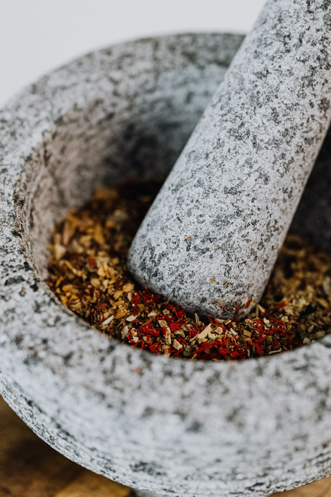
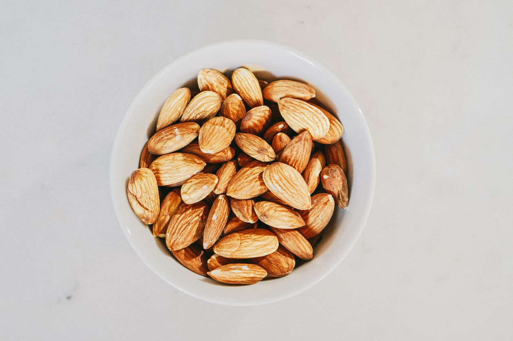

№ 3 · The Maker & the Method
The hand is my father's. The book is mine.
My father ground thandai at this counter for thirty-one Holi seasons and kept his accounts in his head, which meant they died with him — the measures, the prices, which family took how many jars in which year. I learned the grinding from him. The ledger I added myself, the year I took the stone, because a trade you cannot show your working for is a trade you are asking people to take on faith.
This is my nineteenth season. My son runs the second stone now, and my nephew weighs and writes. Between us we grind 40 litres' worth of paste on a full day, and we have never once bought a third stone, because a third stone would need a fourth pair of hands I trust, and trust is the one ingredient I cannot buy by the kilo.

From soak to glass, as it is done here
Two things I will say plainly
About the bottles that say "thandai flavour"
Every year a salesman leaves a crate at my counter: syrup, shelf-stable, "just add milk". I have read his label the way I read everything — as a document. It lists sugar first, water second, and flavouring where the almonds should be. A bottle that says thandai flavour has met a thandai the way a photograph has met a river. It will keep for a year because there is almost nothing in it that can spoil — and almost nothing in it that can feed you, either. My syrup is a different thing: the same Measure, ground the same week, and it keeps 45 days because sugar and cold are honest preservatives. It is the only bottled thing I sell.
About bhang
It is asked about every Holi, sometimes with a wink. The answer is printed on the Counter page and it is printed here: this is a family counter. I have never ground bhang, I do not stock it, and nothing that would change a person's head has ever passed over my stone. A glass from my hand can go to your grandmother and your grandson at the same table, and that is worth more to me than any festival-week money.
Keeping it at home — the care page
Most thandai is ruined not at the stone but in somebody's fridge door. The rules are short:
| What you took home | Keep it | Days |
|---|---|---|
| Ready drink | Chilled, at the back of the fridge, never the door. Shake before pouring — the paste settles, that is natural. | 2 |
| Paste jar | Refrigerated in its glass jar, a clean dry spoon every time. Dress it 1 part paste to 4 parts cold milk, sugar to your house's taste. | 10 |
| Syrup bottle | Cool and dark; refrigerate after opening. One part syrup to three parts cold milk. | 45 |
If it smells of the fridge or tastes of yesterday, pour it out. Thandai is a spring drink; there is always next season, and the book will still be open.
